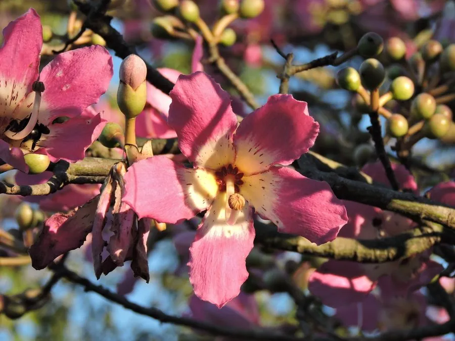

乔木 · 植物界
美丽异木棉 Ceiba speciosa

原产南美的落叶乔木，树干膨大、密生尖刺，秋冬季开粉红色大花，是南方城市著名的观花行道树。
- 分类
- 门被子植物门纲木兰纲目锦葵目科锦葵科属吉贝属
- 栖息环境
- 海拔 800 米以下的热带亚热带地区，喜高温多湿
- 地理分布
- 原产南美洲巴西、阿根廷等地，中国华南地区栽培
- 保护级别
- 暂无评估；中国未列入国家重点保护野生植物名录
物种志
美丽异木棉为落叶乔木，高可达 15 m，树干下部膨大呈瓶状，幼树树干密生圆锥形尖刺；掌状复叶，小叶 5–7 枚，椭圆形，边缘具锯齿。花期 10–12 月，花单生于枝顶或叶腋，花冠粉红色至紫红色，花瓣 5 枚，花径 8–12 cm，盛开时满树繁花；蒴果长圆形，成熟后裂开，内含白色棉絮。
美丽异木棉原产南美洲巴西、阿根廷等地，中国广东、广西、福建、海南、云南等地栽培，喜高温多湿、光照充足，适宜深厚肥沃、排水良好的土壤，不耐寒。秋冬季开花、花大色艳，是南方城市著名的观花行道树与庭园树；果实内的棉絮可作填充材料，木材轻软可制器具。美丽异木棉与木棉同科，但前者树干膨大、花期在秋冬，木棉花期在早春，可据此区分。
形态与习性
- 株高可达 15 m，树干下部膨大
- 花期10–12 月，花粉红色
- 果期翌年 3–4 月，蒴果开裂飘絮
- 光照喜光，不耐长期荫蔽
- 水分喜湿润，怕积水
- 主要用途观花行道树与庭园树、棉絮填充、木材制器具
趣味知识
- 美丽异木棉的花期在秋冬季，满树粉花，是南方城市最醒目的观花树之一。
- 美丽异木棉的树干下部膨大呈瓶状，幼树上密生尖刺。
- 美丽异木棉与木棉同科，但前者秋冬开花，木棉早春开花。